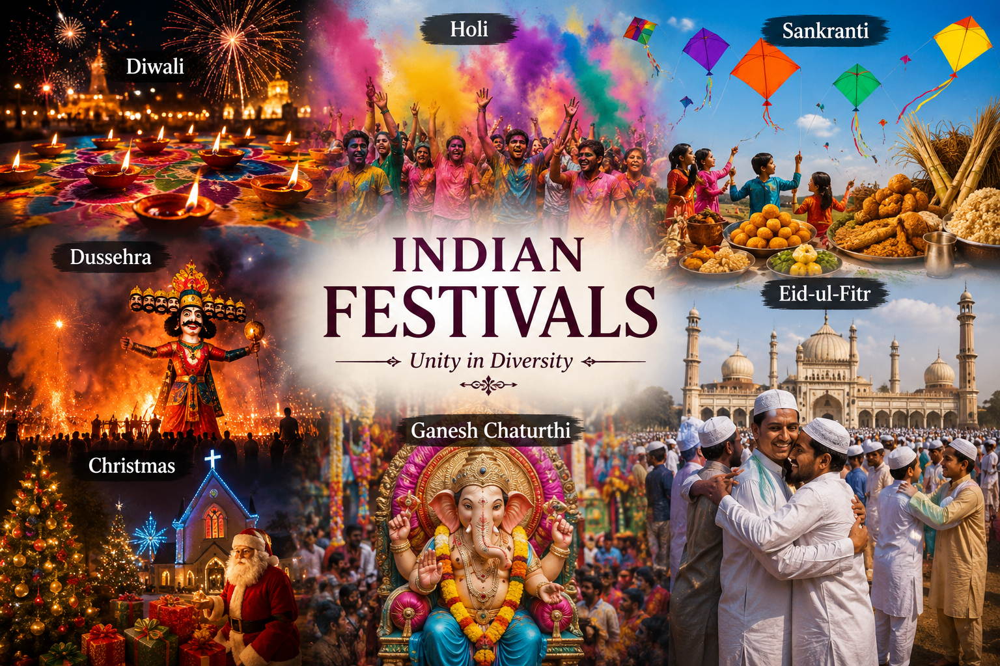
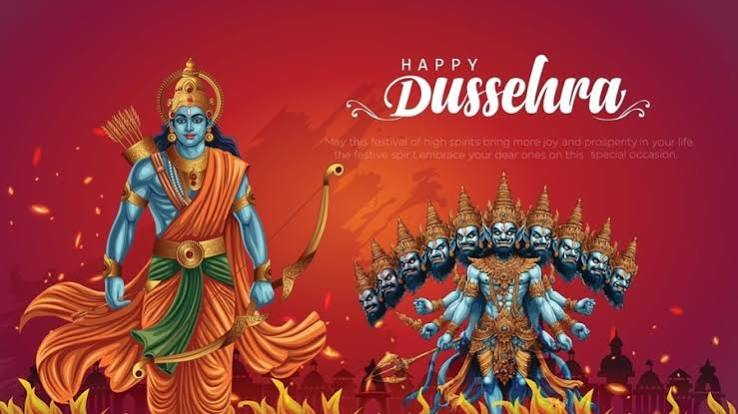
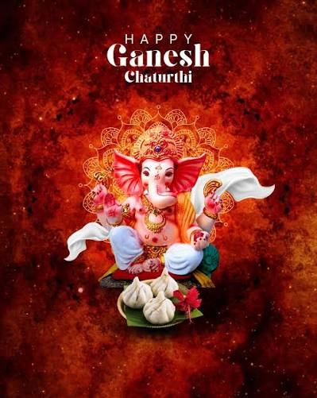

Indian Festivals
Festival Information

India is famous for its rich culture and diverse traditions, which are reflected in its many festivals. Every festival has its own history, significance, and unique way of celebration. Click the image above to learn more about Indian festivals on Wikipedia and explore their cultural importance.
Diwali
Diwali, also known as the Festival of Lights, is one of the most popular festivals in India. It celebrates the victory of light over darkness and good over evil. People decorate their homes with lamps and rangoli, perform Lakshmi Puja, exchange sweets and gifts, and enjoy fireworks with family and friends.
Holi
Holi is known as the Festival of Colors and is celebrated with great joy across India. People throw colorful powders and water on one another, dance to music, and enjoy traditional sweets like gujiya. The festival symbolizes love, happiness, and the arrival of the spring season.
Sankranti
Sankranti is a major harvest festival celebrated in many parts of India. Farmers thank nature for a successful harvest and pray for prosperity. People prepare traditional dishes, fly colorful kites, and participate in cultural events with their families and communities.
Dussehra

Dussehra is celebrated to mark the victory of Lord Rama over Ravana. It symbolizes the triumph of truth, courage, and righteousness over evil. Effigies of Ravana are burned in many places, and people attend fairs, cultural programs, and religious celebrations.
Christmas
Christmas is celebrated every year on December 25 to honor the birth of Jesus Christ. People decorate Christmas trees, attend church services, exchange gifts, and enjoy festive meals with their loved ones. It is a festival that spreads the message of peace, love, and kindness.
Ganesh Chaturthi

Ganesh Chaturthi is a Hindu festival that celebrates the birth of Lord Ganesha, the remover of obstacles and the god of wisdom. Devotees install beautifully decorated idols in homes and public places, offer prayers and sweets, and perform devotional songs. The festival concludes with the immersion of the idols in water.
Eid-ul-Fitr
Eid-ul-Fitr is one of the most important festivals celebrated by Muslims around the world. It marks the end of the holy month of Ramadan, during which Muslims observe fasting and prayers. On this day, people gather for special prayers, wear new clothes, exchange gifts, and enjoy delicious food with family and friends. The festival promotes peace, gratitude, generosity, and unity among people.